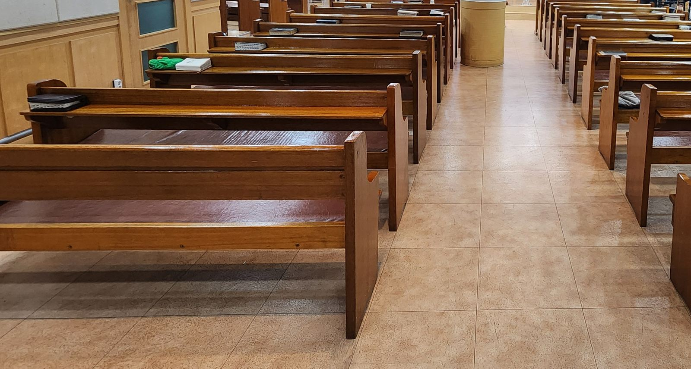
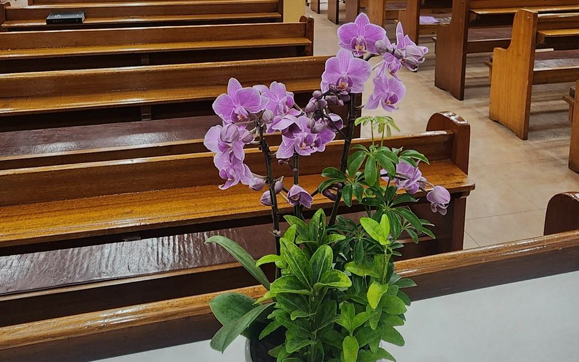

11:00주일예배주일 오전 11시
13:30주일오후예배지금세대 예배당(2층) · 다음세대 멀티실(지하)
19:30수요예배매주 수요일 · 사무엘하 강해
05:00새벽기도매일 · 요한계시록 강해
처음 오신 분
처음 오셨나요?
네 걸음이면 충분합니다.
- 예배에 오세요주일 오전 11시. 미리 알리지 않고 오셔도 됩니다.
- 예수님을 만나세요우리의 인사는 「예수 그리스도」입니다.
- 함께하세요목장 모임과 다음세대학교가 있습니다.
- 연락하세요031-743-5743
매일 말씀
하루를 말씀으로 시작하세요
함께하는 모임
함께하면 더 좋습니다

목장
젊은이 목장매주 목요일 저녁 7시 30분
처음 오시는 분은 그냥 오셔도 됩니다
목장
드보라처럼매주 목요일 오후 2시 30분
처음 오시는 분은 그냥 오셔도 됩니다
다음세대
다음세대학교유초등부·중고등부·청년부
주일 오후 1시 30분
2026년 표어
교회, 사명의 자리에 서라
누가복음 15장 7절